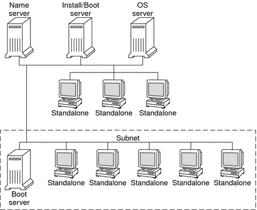

Document Information
Preface
Part I Planning to Install Over the Network
1. Where to Find Solaris Installation Planning Information
2. Preconfiguring System Configuration Information (Tasks)
3. Preconfiguring With a Naming Service or DHCP
Part II Installing Over a Local Area Network
4. Installing From the Network (Overview)
x86: Overview of Booting and Installing Over the Network With PXE
5. Installing From the Network With DVD Media (Tasks)
6. Installing From the Network With CD Media (Tasks)
7. Installing Over the Network (Examples)
8. Installing From the Network (Command Reference)
Part III Installing Over a Wide Area Network
9. WAN Boot (Overview)
10. Preparing to Install With WAN Boot (Planning)
11. Installing With WAN Boot (Tasks)
12. SPARC: Installing With WAN Boot (Tasks)
13. SPARC: Installing With WAN Boot (Examples)
14. WAN Boot (Reference)
Part IV Appendixes
A. Troubleshooting (Tasks)
B. Installing or Upgrading Remotely (Tasks)
Glossary
Index
|
Network Installation Introduction
This section provides you with information you need before you can perform an
installation from the network. Network installations enable you to install the Solaris
software from a system, called an install server, that has access to the
current Solaris release disc images. You copy the contents of the current
Solaris release DVD or CD media to the install server's hard disk. Then,
you can install the Solaris software from the network by using any of
the Solaris installation methods.
Required Servers for Network Installation
To install the Solaris OS from the network, the systems to be
installed require the following servers to be present on the network.
Install server – A networked system that contains the current Solaris release disc images from which you can install current Solaris release on other systems on the network. You create an install server by copying the images from the following media:
You can enable a single install server to provide disc images for different Solaris releases and for multiple platforms by copying the images on to the install server's hard disk. For example, a single install server could contain the disc images for the SPARC platform and x86 platform. For details about how to create an install server, refer to one of the following sections.
Boot server – A server system that provides client systems on the same network subnet with the information that they need to boot in order to install the OS. A boot server and install server are typically the same system. However, if the system on which the current Solaris release is to be installed is located in a different subnet than the install server and you are not using DHCP, a boot server is required on that subnet. A single boot server can provide current Solaris release boot software for multiple releases, including the current Solaris release boot software for different platforms. For example, a SPARC boot server can provide the Solaris 9 and current Solaris release boot software for SPARC based systems. The same SPARC boot server can also provide the current Solaris release boot software for x86 based systems.
Note - When using DHCP, you do not need to create a separate boot server. For more information, see Preconfiguring System Configuration Information With the DHCP Service (Tasks).
For details about how to create a boot server, refer to one of the following sections:
(Optional) DHCP server – A server that uses the Dynamic Host Configuration Protocol (DHCP) to provide the network parameters that are necessary for installation. You can configure a DHCP server to configure and install specific clients, all clients on a specific network, or an entire class of clients. When using DHCP, you do not need to create a separate boot server. After you have created the install server, you add clients to the network with the add_install_client command and the -d option. The -d option enables you to set up client systems for Solaris installation from the network by using DHCP. For information on DHCP options for installation parameters, see Preconfiguring System Configuration Information With the DHCP Service (Tasks). (Optional) Name server – A system that manages a distributed network database, such as DNS, NIS, NIS+, or LDAP, that contains information about systems on the network. For details about how to create a name server, refer to System Administration Guide: Naming and Directory Services (DNS, NIS, and LDAP).
Note - The install server and name server can be the same or different systems.
Figure 4-1 illustrates the servers that are typically used for network installation. Note that
this sample network does not include a DHCP server. Figure 4-1 Network Installation Servers
|